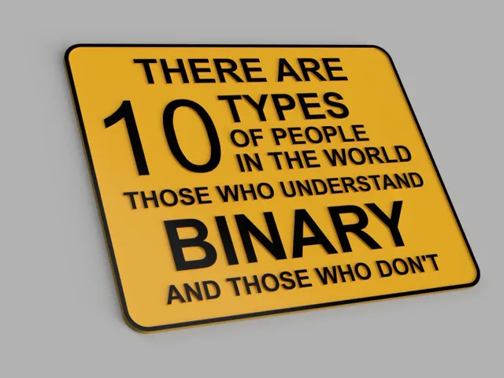

C4 Arithmétique des ordinateurs ¶
"It makes me nervous to fly an airplane since I know they are designed using floating-point arithmetic"
Cours¶
Attention
Ce diaporama ne vous donne que quelques points de repères lors de vos révisions. Il devrait être complété par la relecture attentive de vos propres notes de cours et par une révision approfondie des exercices.
Travaux Dirigés¶
Travaux Pratiques¶
 Exercice 1 : Puissance¶
Exercice 1 : Puissance¶
- Ecrire une fonction
puissancequi prend en argument un entier \(n\) et un entier positif \(p\) et renvoie \(n^p\). -
Modifier la fonction précédente de façon à prendre en compte le cas des exposants négatifs.
Aide
On rappelle que pour \(n \in \mathbb{Z}^*,\; p \in \mathbb{N} \quad n^{-p} = \dfrac{1}{n^p}\)
-
Proposer un jeu de test pour cette fonction.
Exercice 2 : Du binaire au décimal¶
- Ecrire une fonction
bin_to_decimalqui convertit une écriture binaire en sa valeur décimale. L'écriture binaire sera lue comme un tableau d'entiers contenant des 0 ou des 1 et on prendra aussi en argument sa taille. Par exemple si le tableaubincontient les valeurs1,0,1,1alorsbin_to_decimal(bin,4)doit renvoyer11(car \(2^3 + 2^1+2^0 = 11\)) -
Modifier la fonction
bin_to_decimalqui prend maintenant en argument un troisième paramètre booléensigne, sisignevauttruel'écriture binaire est traité comme un complément à deux sur la longueur du tableau, sinon la fonction se comporte comme à la question précédente. Par exemplebin_to_decimal(bin,4,false)doit renvoyer11(même comportement que ci-dessus) maisbin_to_decimal(bin,4,true)doit renvoyer-5, en effet \(-2^3+2^1+2^0=-5\). -
Vous avez (peut-être) utilisé la fonction
puissancede l'exercice précédent, dans ce cas, reprendre cet exercice en remarquant que :\[ \sum_{k=0}^{n} a_ib^i = a_0 + b\left( a_1 + b\left(a_2+ \dots (a_n-1+ba_n) \right) \right) \]et que par conséquent la somme de gauche peut se calculer (plus efficacement) sans utiliser le calcul explicite des puissances de \(b\).
Exercice 3 : Conversion en décimal¶
Ecrire une fonction to_decimal qui prend en argument un entier base (compris entre 2 et 16), un tableau de caractères chiffres et sa taille size et renvoie l'entier dont l'écriture en base base corresponds aux élements du tableau chiffres. Par exemple si chiffres contient "C","7" alors to_decimal(16,chiffres,2) doit renvoyer \(12\times 16+7 = 199\).
Aide
- On utilisera (bien évidemment) les caractères "A", "B", "C", "D", "E", "F" pour les chiffres situés au delà de 9.
- On écrira une version ne calculant pas explicitement les puissances de la base (voir la troisième question de l'exercice précédent)
Exercice 4 : Conversion depuis la base 10¶
-
la base 2
-
Ecrire en C, une fonction
binairequi prend en argument un entiernpositif compris entre 0 et 255 et renvoie un tableau de 0 et de 1 contenant son écriture binaire sur 8 bits (avec les bits de poids forts en premier). Par exemple l'appelbinaire(28)doit renvoyer le tableau00011100.Aide
On rappelle que la méthode consiste à effectuer des divisions successives par 2 puis à lire les restes obtenus dans l'ordre inverse.
-
Ecrire un programme
bin.exequi utilise cette fonction, lemainde ce programme accepte en ligne de commande un argumentnet affiche ensuite l'écriture binaire dendans le terminal. Par exemple./bin.exe 135affiche11100001. -
Expliquer rapidement pourquoi
./bin.exe 260affiche00000100.
-
-
la base 16
- Ecrire en C, une fonction
hexadecimalqui prend en argument un entiernpositif compris entre 0 et \(2^{32}-1\) et renvoie un tableau de caractères correspondant aux chiffres en base 16 de l'écriture hexadécimal den. - De même que pour le binaire, écrire un programme
hex.exequi utilise cette fonction en prenant son argument sur la ligne de commande. Par exemple./hex.exe 212afficheD4.
- Ecrire en C, une fonction
Exercice 5 : Algorithme des divisions succesives¶
Le but de l'exercice est d'écrire une implémentation en langage C de l'algorithme des divisions successives qui permet de convertir un nombre écrit en base 10 dans une base \(b\) quelconque (\(b \geqslant 2\)). Si \(b>10\), on utilise comme chiffre les lettres de l'alphabet, on déclare donc en début de programme une chaine de caractères :
- Ecrire une fonction de signature
int nb_chiffres(int n, int b)qui renvoie le nombre de chiffres denen baseb. -
Ecrire une fonction de signature
char* chiffres(int n, int b)qui renvoie les chiffres denen basebsous la forme d'une chaine de caractères. Par exemplechiffres(42,2)doit renvoyer le chaine de caractères"101010"Aide
On pourra procéder de la façon suivante :
- déterminer
ple nombre de chiffres denen basebgrâce à la fonction de la question 1. - allouer dans le tas un tableau de
p+1caractères (on prévoit le caractère sentinelle en fin de chaine). - remplir ce tableau avec les restes successifs des divisions de
nparb
- déterminer
-
Ecrire une fonction main qui accepte en ligne de commande des arguments et utiliser ces arguments (après conversion) dans l'appel à la fonction
chiffreset écrit le résultat dans le terminal. Par exemple si votre executable s'appellebaseb.exe, alors on pourra écrire./baseb.exe 42 2pour optenir comme affichage dans le terminal l'écriture en base 2 de 42 c'est à dire101010. -
Tester votre fonction en affichant l'écriture en base
26de406342(on rappelle qu'il y a 26 chiffres en base 26, les premiers sont0,1, .. ,9et après on utilise les lettresA, B, ...).
Vérfier votre réponse
Exercice 6 : Attention aux flottants !¶
-
On considère le programme suivant :
- Expliquer pourquoi ce programme ne termine pas
- Expliquer pourquoi en modifiant la ligne 9 en
x = x + 0.25le programme termine et indiquer l'affichage obtenu. - Donner une autre modification de la ligne 9 qui permettrait aussi d'avoir un programme qui termine.
-
On considère le programme suivant :
- Prédire l'affichage produit par ce programme, le tester.
- Même question si la ligne 6 est modifiée en
double big = pow(2.0,52.0); - Expliquer les résultats obtenus.
-
-
Justifier rapidement que pour tout entier \(n \geq 1\),
\[ \sum_{k=1}^{n} \frac{1}{k(k+1)} = 1 - \frac{1}{n+1} \]Aide
On pourra remarquer que \(\frac{1}{k(k+1)} = \frac{1}{k} - \frac{1}{k+1}\)
-
Ecrire un programme calculant cette somme et comparer avec le résultat exact pour \(n=999999\). On utilisera le spécificateur de format
%.16fafin d'afficher 16 chiffres significatifs lors deprintfsur les flottants.Warning
Si
iest de type entier, l'opération1/iest la division entière, pour une division décimal l'un des arguments au moins doit être un nombre en virgule flotttante, on peut donc (par exemple) faire1.0/i.
-
-
- Ecrire un programme calculant la somme des inverses des nombres entiers allant de \(1\) à \(10^9\).
- Faire de même en inversant l'ordre des calculs c'est-à-dire en commençant par ajouter les nombres de plus grands dénominateurs.
- Expliquer la différence entre les deux résultats obtenus (visible en utilisant le spécificateur de format
%.16flors de l'affichage des flottants) - Lequel des deux est selon vous le plus précis ? (justifier)
Exercice 7 : Erreur d'arrondi¶
Le calcul en arithmétique à virgule de \(0.1+0.2\) ne donne pas exactement \(0.3\). Cet exercice a pour but d'expliquer cette erreur bien connue.
-
Donner la représentation en simple précision au format de la norme IEEE-754 des nombres suivants :
- \(0.1\)
- \(0.2\)
- \(0.3\)
-
Faire l'addition "à la main" des représentations des \(0.1\) et de \(0.2\)
-
Comparer le résultat obtenu avec la représentation de \(0.3\) et en déduire l'erreur commise
-
Ecrire un programme qui affiche le résultat de \((0.2+0.1)-0.3\)
Exercice 8 : Discriminant¶
- Ecrire une fonction
discriminantqui prend en paramètres trois flottants \(a,b\) et \(c\) et renvoie \(b^2-4ac\). - Ecrire une fonction
nombre_solutionsqui prend en paramètre un flottant \(d\) et affiche2 solutionssi \(d>0\),1 solutionsi \(d=0\) etpas de solutionssi \(d<0\). - Déterminer le nombre de solutions réelles des équations suivantes et comparer avec les résultats obtenus en utilisant les deux fonctions ci-dessous :
- \(x^2 + 1,4x - 0,49 = 0\)
- \(x^2 + 0,6x - 0,09 = 0\)
- \(x^2 + 0,4x - 0,04 = 0\)
- Interpréter ces résultats
Exercice 9 : Comportement d'une suite¶
On considère la suite \((u_n)_{n \in \mathbb{N}}\) définie par :
\(\left\{ \begin{array}{ll} u_0=e-1 \\ u_{n+1} = (n+1)\,u_n - 1 \end{array}\right.\)
On rappelle qu'en TD (exercice 10), on a établi que cette suite converge et a pour limite 0.
-
Ecrire un programme en C, qui affiche les \(30\) premiers termes de la suite \(u\). On utilisera la constante
M_Edemath.hcomme valeur de \(e\). -
Expliquer le résultat obtenu.
Exercice 10 : Convergence numérique et mathématique¶
On considère la suite \((u_n)_{n \in \mathbb{N}}\) définie par :
\(\left\{ \begin{array}{ll} u_1= \dfrac{5}{4} \\ u_2 = \dfrac{7}{5} \\ u_{n+2} = 10 - \dfrac{23}{u_{n+1}} + \dfrac{14}{u_nu_{n+1}} \end{array}\right.\)
On rappelle qu'en TD (exercice 10), on a établi que cette suite converge et on a déterminé sa limite.
- Ecrire un programme qui affiche les 40 premiers termes de la suite \(u\).
- Expliquer le résultat obtenu.
Note
Cet exercice se contente d'exhiber une suite qui converge vers 2 mais qui numériquement semble converger vers 7. On ne détaille pas le principe de constructions de telles suites, il faut bien comprendre que 2 et 7 sont choisis au hasard et qu'il est assez facile de construire une suite qui converge vers une valeur \(\alpha\) alors que numériquement elle semble converger vers une valeur différente \(\beta\).
On pourra consulter les travaux de Jean-Michel Muller et Vicent Lefèvre dont cet exemple s'inspire.
Humour d'informaticien¶
